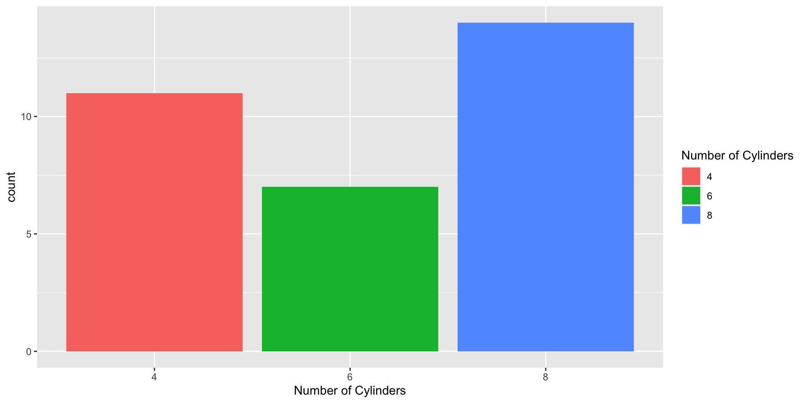
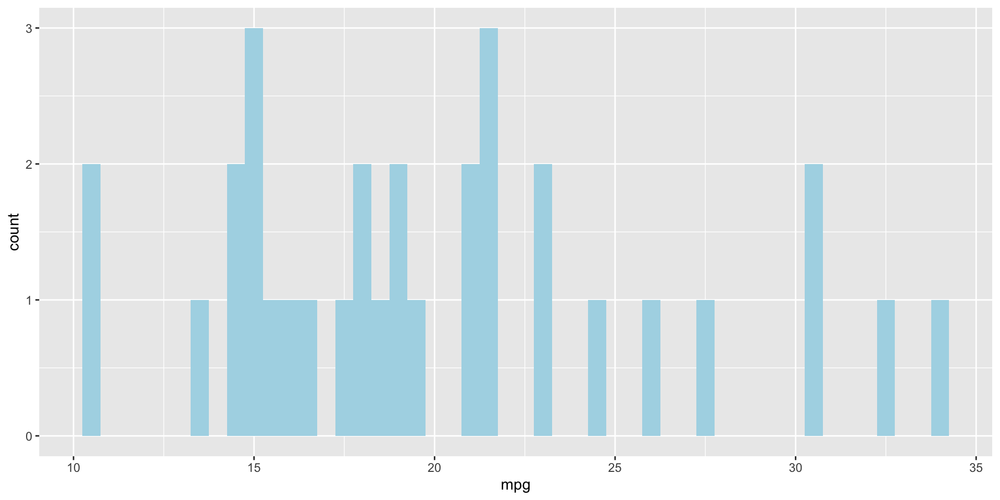
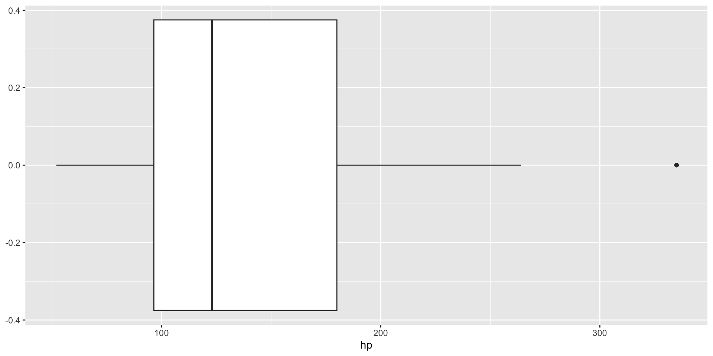
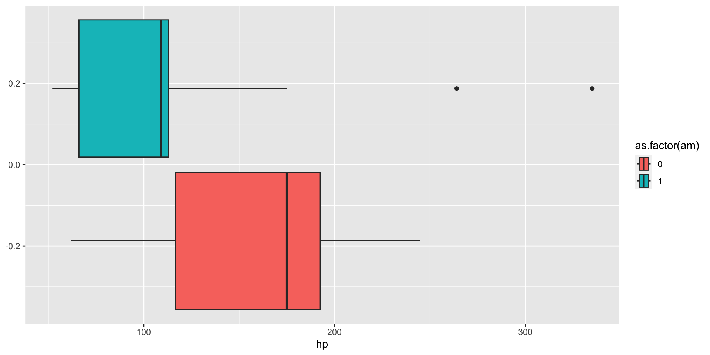
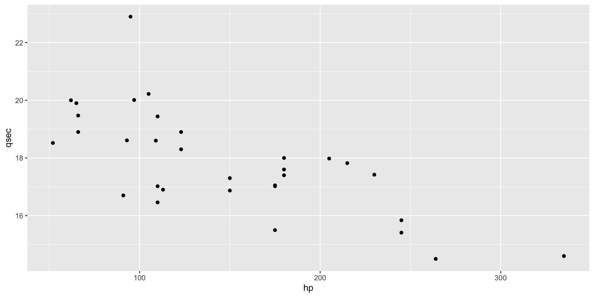

EDA: How should we visualize and transform your data in a systematic way?
1. Generate questions about your data.
2. Answer by visualizing, transforming, or modeling your data.
3. Use what you learn to refine your question or generate new questions.
mtcars datasetR has a built-in dataset called mtcars (Motor Trend Car Road Tests) which you can pull directly.
mpg cyl disp hp drat wt qsec vs am gear carb
Mazda RX4 21.0 6 160 110 3.90 2.620 16.46 0 1 4 4
Mazda RX4 Wag 21.0 6 160 110 3.90 2.875 17.02 0 1 4 4
Datsun 710 22.8 4 108 93 3.85 2.320 18.61 1 1 4 1
Hornet 4 Drive 21.4 6 258 110 3.08 3.215 19.44 1 0 3 1
Hornet Sportabout 18.7 8 360 175 3.15 3.440 17.02 0 0 3 2
Valiant 18.1 6 225 105 2.76 3.460 20.22 1 0 3 1We already know:
mean()
median()
But, there is no mode() function. For that, we can use the table() function OR create our own function
range()var()sd()IQR()With these metrics, it is also great to visualize them:
Tip
If your variable is continuous, use a histogram. If your variable is categorical, use a bar chart.


cut_width(mpg, 0.5) n
1 [10.2,10.8] 2
2 (13.2,13.8] 1
3 (14.2,14.8] 2
4 (14.8,15.2] 3
5 (15.2,15.8] 1
6 (15.8,16.2] 1
7 (16.2,16.8] 1
8 (17.2,17.8] 1
9 (17.8,18.2] 2
10 (18.2,18.8] 1
11 (18.8,19.2] 2
12 (19.2,19.8] 1
13 (20.8,21.2] 2
14 (21.2,21.8] 3
15 (22.8,23.2] 2
16 (24.2,24.8] 1
17 (25.8,26.2] 1
18 (27.2,27.8] 1
19 (30.2,30.8] 2
20 (32.2,32.8] 1
21 (33.8,34.2] 1Outliers can significantly impact model fitting and statistical calculations. Always conduct exploratory analysis to understand your data (and know the context of your data!) These are
data points that don’t seem to fit the pattern
sometimes data entry errors
sometimes real observations that suggest new information

But, let’s make sure we consider outliers by groups too depending on your question.

Use boxplots/scatterplots/histograms
Filter data to observations > Q3 + 1.5(IQR) or < Q1 - 1.5(IQR)
mtcars <- mtcars %>%
mutate(
Q1 = quantile(hp, 0.25), # 25th percentile
Q3 = quantile(hp, 0.75), # 75th percentile
IQR = Q3 - Q1, # Interquartile range
lower_bound = Q1 - 1.5 * IQR, # lower cutoff
upper_bound = Q3 + 1.5 * IQR, # upper cutoff
outlier_iqr = ifelse(hp < lower_bound | hp > upper_bound, 1, 0)
)
print(mtcars %>% filter(outlier_iqr == 1)) mpg cyl disp hp drat wt qsec vs am gear carb Q1 Q3 IQR
Maserati Bora 15 8 301 335 3.54 3.57 14.6 0 1 5 8 96.5 180 83.5
lower_bound upper_bound outlier_iqr
Maserati Bora -28.75 305.25 1mtcars <- mtcars %>%
mutate(zscore_hp = as.numeric(scale(hp)),
outlier_zscore = ifelse(abs(zscore_hp) > 2, 1, 0))
print(mtcars %>% filter(outlier_zscore == 1)) mpg cyl disp hp drat wt qsec vs am gear carb Q1 Q3 IQR
Maserati Bora 15 8 301 335 3.54 3.57 14.6 0 1 5 8 96.5 180 83.5
lower_bound upper_bound outlier_iqr zscore_hp outlier_zscore
Maserati Bora -28.75 305.25 1 2.746567 1mtcars <- mtcars %>%
mutate(
outlier_pct = ifelse(hp > quantile(hp, 0.95), 1, 0)
)
print(mtcars %>% filter(outlier_pct == 1)) mpg cyl disp hp drat wt qsec vs am gear carb Q1 Q3 IQR
Ford Pantera L 15.8 8 351 264 4.22 3.17 14.5 0 1 5 4 96.5 180 83.5
Maserati Bora 15.0 8 301 335 3.54 3.57 14.6 0 1 5 8 96.5 180 83.5
lower_bound upper_bound outlier_iqr zscore_hp outlier_zscore
Ford Pantera L -28.75 305.25 0 1.711021 0
Maserati Bora -28.75 305.25 1 2.746567 1
outlier_pct
Ford Pantera L 1
Maserati Bora 1Covariance expresses how two numeric variables change together, whether it be positive or negative. (Covariance is sensitive and influenced by the units and scales of our variables.)
Correlation helps interpret covariance further by assessing both the strength and direction. The Pearson’s correlation coefficient, \(\rho_{xy}\), is the most commonly used measure, where \[-1 \leq \rho_{xy} \leq 1\]
\(\rho_{xy} = -1\) indicates a near perfect negative linear relationship
\(\rho_{xy} = 1\) indicates a near perfect positive linear relationship
However, the relationship gets weaker the closer the coefficient is to 0.
Let’s investigate more into the mtcars dataset and see if there is a relationship between hp, the gross horsepower of a car, and qsec, the shortest time taken to travel a quarter-mile distance.
